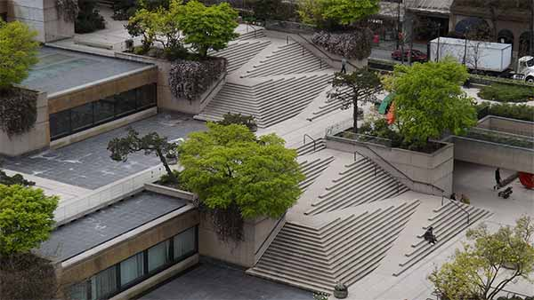
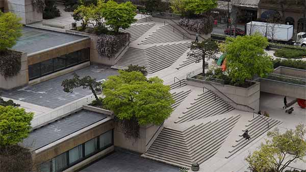

Robson Square – Vancouver
Robson Square is often outlined as a good example of accessible design as the stairs and the ramp are intergrated as one piece.
End of slide. Go to next slide
Robson Square is often outlined as a good example of accessible design as the stairs and the ramp are intergrated as one piece.
End of slide. Go to next slide